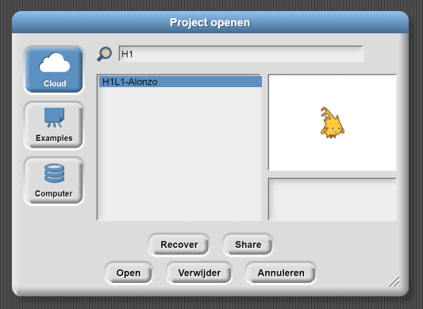
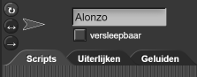
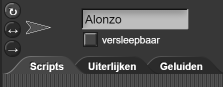

Het delen van je App
Op deze pagina, leer je hoe je app kunt delen middels een link en hoe je je
app kunt laden op een mobiel apparaat.

- Zorg ervoor dat je project opgeslagen is.
- Kies "Open..." van het bestandmenu en selecteer het bestand van je project lijst (In deze les, "H1L1-Alonzo"), en klik "Share." (Zie de video hieronder.)
- Je wordt gevraagd of je zeker weet dat je het wilt publiceren. Klik op "Ja." (Daarna "Open" of "Annuleren" om het menu de sluiten. Het maakt niet uit op welke je klikt.)
- Kopieer de URL (webadres) boven aan het browser venster. Je kan deze link gebruiken om je app te delen.
Om je bestanden snel te vinden, type "H1" in je zoekbalk om alleen een lijst van
Hoofdstuk 1-bestanden te zien.
Als je verbinding Youtube blokkeert, kijk de video dan hier.
-
 Log uit en
laat je partner inloggen. Open de link die je
gemaakt hebt met je eerste partners account, en sla het project ook op op je partners account
zodat jullie beiden een kopie hebben.
Let op: Dit zijn kopieën—niet dezelfde bestanden. Dus, wanneer je het project verandert op het ene account zal deze niet veranderen op het andere account; je moet het opnieuw opslaan op het andere account.
Log uit en
laat je partner inloggen. Open de link die je
gemaakt hebt met je eerste partners account, en sla het project ook op op je partners account
zodat jullie beiden een kopie hebben.
Let op: Dit zijn kopieën—niet dezelfde bestanden. Dus, wanneer je het project verandert op het ene account zal deze niet veranderen op het andere account; je moet het opnieuw opslaan op het andere account.
Om Alonzo te kunnen bedienen op een mobiel apparaat, moet je zorgen dat de optie
"versleepbaar" boven Scripts niet is aangevinkt.


-
Laad de app op een mobiel apparaat:
-
Op Apple iOS...
- Op het mobiele apparaat, open de project URL van stap 3 of 4 hierboven in Safari.
- Bovenaan het Safari scherm, druk op het
 deel icoon, selecteer dan
"Toevoegen aan beginscherm" van het menu dat verschijnt.
deel icoon, selecteer dan
"Toevoegen aan beginscherm" van het menu dat verschijnt.
-
Op Android...
- Op het mobiele apparaat, open de project URL van stap 3 of 4 hierboven in Chrome.
- Druk op het ☰ instellingen icoon, selecteer daarna "Toevoegen aan beginscherm" van het menu dat verschijnt.
-
Op Apple iOS...
- via de email, SMS, of sociale media door de URL te zenden naar je vrienden!